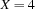
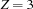
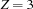

2.5 Incompleteness of Propagation
Constraint propagation is not a complete solution method. It may happen that a space has a unique solution and that constraint propagation does not find it. It may also happen that a space has no solution and that constraint propagation does not lead to a failed propagator.
A straightforward example for the second case consists of three propagators for

and a constraint store

This space has no solution. Nevertheless, none of the propagators is inconsistent or can tell something to the constraint store.
To see an example for the case where a unique solution is not found by constraint propagation, suppose we have interval propagators for the constraints

and a constraint store

This space has the unique solution ,  , . Nevertheless, none of the propagators can narrow a variable domain.
, . Nevertheless, none of the propagators can narrow a variable domain.
If we narrow the domains to
the space becomes unsatisfiable. Still, none of the above propagators is inconsistent or can narrow a variable domain.